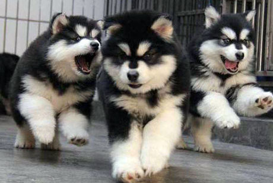
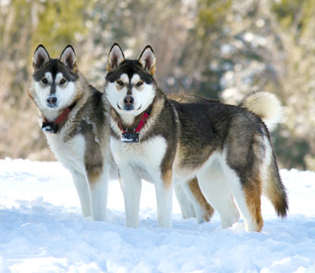

No. The Alaskan Husky is not suitable for first time dog-owners.
They need a lot of time and patience when growing and maturing. Not only that, they are super-energetic and need plenty of exercise (they were sled dogs remember)!
An Alaskan litter is typically around 4-6 puppies. Sometimes, we get the odd 7 or more!
Classed as a medium-to-large breed, your furry friend will be fully matured anywhere between 12-18 months of age.
Not known for barking, these canines will howl to let you know their feelings. Endearing for most, you’ll even have a chorus when the ice cream truck passes by.
You can always use a sandpit in the yard to focus any digging behaviors. They often like to dig to get a cool spot to sleep in those warmer climates!